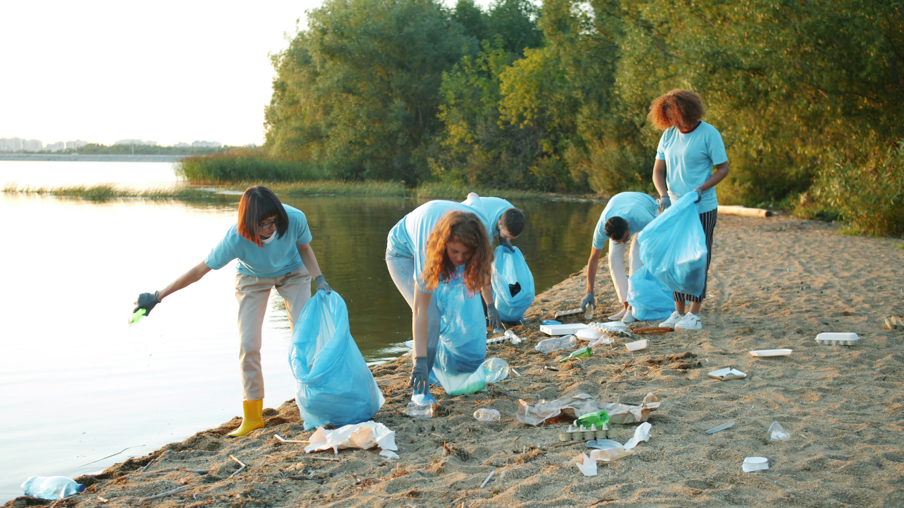

Crea tu perfil
Cuéntanos tus habilidades, disponibilidad y las causas que más te importan.
VoluntariApp conecta a personas como tú con ONGs que necesitan exactamente lo que sabes hacer. Sin burocracia. Sin barreras. Solo impacto real.


2.1M
horas donadas este año
Diseñado para que en menos de 10 minutos ya estés conectado con una causa que realmente te importe.
Cuéntanos tus habilidades, disponibilidad y las causas que más te importan.
Explora proyectos cercanos a ti o en remoto. Filtra por causa, duración y habilidades.
Contacta directamente con la ONG, coordina tu participación y genera impacto real.

"Pasamos de 8 a 70 voluntarios en 4 meses"
Publica tus necesidades, describe los perfiles que buscas y recibe solicitudes de voluntarios verificados.
Únete a miles de personas que cada semana dedican unas horas a construir una sociedad más justa y solidaria.
Gratis siempre para voluntarios · Sin tarjeta · En 10 minutos